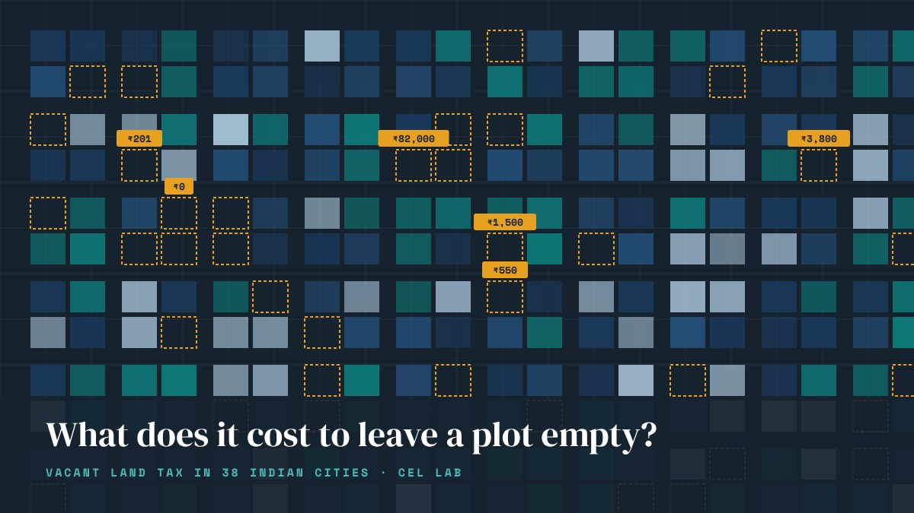
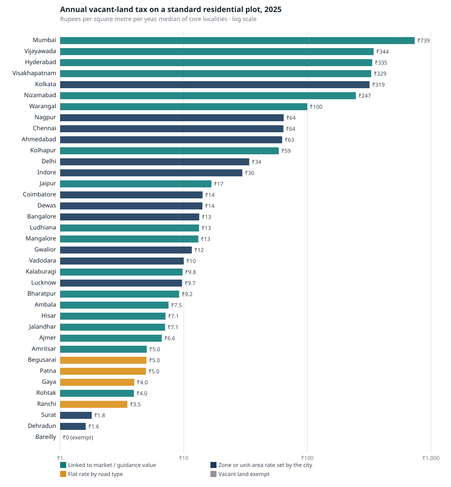
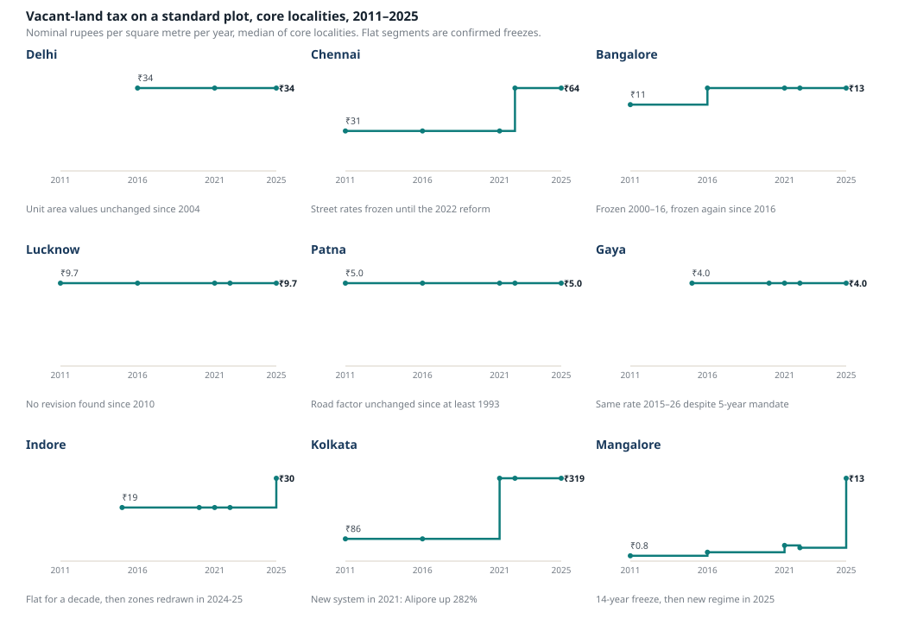
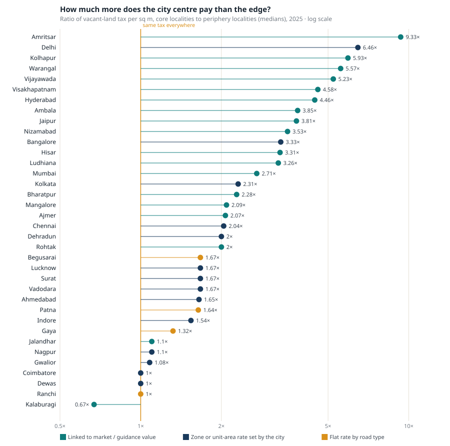

Data & visuals
Datasets, dashboards and charts
Interactive views and single-chart stories built from the datasets the lab assembles. We publish aggregates and visuals here; underlying data are released with the papers or on request.

Interactive dashboard
Vacant land tax across Indian cities
38 cities, 16 states, 2011–2025. Map, ranking and city-by-city formulas for what it costs to hold a residential plot empty.
Open →
Data story
What does it cost to leave a plot empty in India?
A 400-fold spread in the holding cost of the same plot, and the four tax designs behind it.
Open →
Data story
The frozen tax
Nine cities whose rates did not move for a decade or more, and what happened when they finally did.
Open →
Data story
Who really pays?
Core-to-periphery tax ratios for 36 cities, from 9× in Amritsar to below 1 in Kalaburagi.
Open →